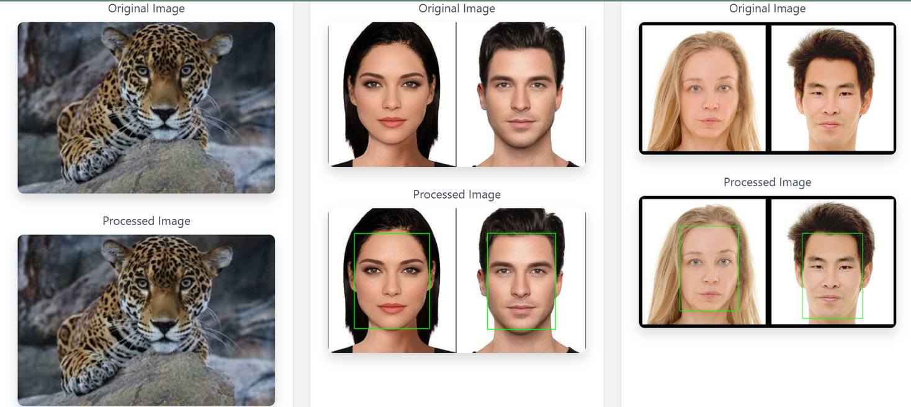

This project introduces an intelligent face detection system that identifies and marks human faces within static images. It utilizes AI-based algorithms such as Haar Cascades and Convolutional Neural Networks (CNNs) to ensure accurate recognition, high-speed processing, and secure image handling.
| Sprint | Objective Summary |
|---|---|
| Sprint 1 | Image input handling and preprocessing modules setup |
| Sprint 2 | Face detection pipeline using Haar/CNN |
| Sprint 3 | Logging, result visualization, and UI responsiveness |
| Sprint 4 | Security, error handling, and performance tuning |
US-FD1: Intelligent Face Detection Implementation
As a system administrator,
I want to deploy an AI-driven face detection system that identifies faces within images,
So that I can automate user authentication and enhance system security.
| Task | Status |
|---|---|
| Image Input Handling (12 ph) | Completed |
| Implement Face Detection Module (20 ph) | Completed |
| Preprocessing Pipeline Development (16 ph) | Completed |
| Visual Bounding Box Rendering (14 ph) | Completed |
| Performance Optimization (18 ph) | Completed |
| Logging and Error Handling Mechanism (10 ph) | Completed |
| Security & GDPR Compliance Features (12 ph) | Completed |
| End-to-End System Testing and Validation (16 ph) | Completed |
| Agent | Role & Responsibility |
|---|---|
| Image Preprocessing Agent | Converts, normalizes, and prepares image data for analysis |
| Face Detection Agent | Detects facial regions using AI models |
| Bounding Box Generation Agent | Draws rectangles around detected facial features |
| Result Analysis Agent | Summarizes face counts and inference performance |
| Logging & Reporting Agent | Maintains records of detection events and processing details |
| Error Handling Agent | Manages invalid images, exceptions, and user errors |
| Security Compliance Agent | Ensures encryption and privacy adherence to GDPR/CCPA |
1. Image Upload → User provides an image file.
2. Preprocessing → Image is converted to grayscale, resized, and denoised.
3. Detection → Faces are localized using Haar Cascades and CNNs.
4. Bounding Box Drawing → Bounding boxes are drawn around each detected face.
5. Result Analysis → System summarizes detection stats.
6. Logging & Reporting → Data is logged for audit and analysis.
7. Output Display → UI displays annotated image and logs.
| Tool / Framework | Purpose / Usage |
|---|---|
| OpenCV | Haar Cascade Classifiers for face detection |
| TensorFlow / Keras | Deep learning models (CNN-based face detection) |
| NumPy, Pillow | Image processing and input/output handling |
| Matplotlib | Visualization and bounding box debugging |
| Python 3.11 | Core programming language |
| Jupyter / Streamlit / Panel | UI development and interactive image display |
Below is the result of the face detection system applied to a sample image:

Face detection tested across various images with successful bounding box recognition. Evaluation metrics and logs are available in the repository.
The Face Detection System is a robust, privacy-compliant, and performance-optimized solution for detecting human faces in static images. By integrating advanced AI models (Haar Cascades, CNNs) with secure logging and visualization capabilities, the system enhances user authentication and security operations.